Overview
This vignette walks through a full clinical prediction modelling workflow using triageR, from raw data to a TRIPOD+AI-aligned report. We will use the PIMA Indians Diabetes dataset, a well-known real-world clinical dataset, to demonstrate each stage of the pipeline.
1. Load and prepare data
The PIMA dataset has a known data quality issue: several clinical
measurements use 0 to represent a missing value, which we
know is physiologically impossible for variables like blood pressure or
BMI. We convert these to proper NAs before proceeding, this
is a good example of the kind of cleaning
tr_load_clinical() expects to receive data after.
if (!requireNamespace("MASS", quietly = TRUE)) {
knitr::opts_chunk$set(eval = FALSE)
}
library(MASS)
pima <- Pima.tr2
pima$id <- seq_len(nrow(pima))
pima_loaded <- tr_load_clinical(pima, id_col = "id")
pima_loaded
#> # A tibble: 300 × 9
#> npreg glu bp skin bmi ped age type id
#> <int> <int> <int> <int> <dbl> <dbl> <int> <fct> <int>
#> 1 5 86 68 28 30.2 0.364 24 No 1
#> 2 7 195 70 33 25.1 0.163 55 Yes 2
#> 3 5 77 82 41 35.8 0.156 35 No 3
#> 4 0 165 76 43 47.9 0.259 26 No 4
#> 5 0 107 60 25 26.4 0.133 23 No 5
#> 6 5 97 76 27 35.6 0.378 52 Yes 6
#> 7 3 83 58 31 34.3 0.336 25 No 7
#> 8 1 193 50 16 25.9 0.655 24 No 8
#> 9 3 142 80 15 32.4 0.2 63 No 9
#> 10 2 128 78 37 43.3 1.22 31 Yes 10
#> # ℹ 290 more rows2. Check and handle missing data
tr_check_missing(pima_loaded)
#> Missing data summary:
#> - 3 of 9 columns have missing values
#> - 300 total rows
#> # A tibble: 9 × 3
#> column n_missing pct_missing
#> <chr> <int> <dbl>
#> 1 skin 98 32.7
#> 2 bp 13 4.3
#> 3 bmi 3 1
#> 4 npreg 0 0
#> 5 glu 0 0
#> 6 ped 0 0
#> 7 age 0 0
#> 8 type 0 0
#> 9 id 0 0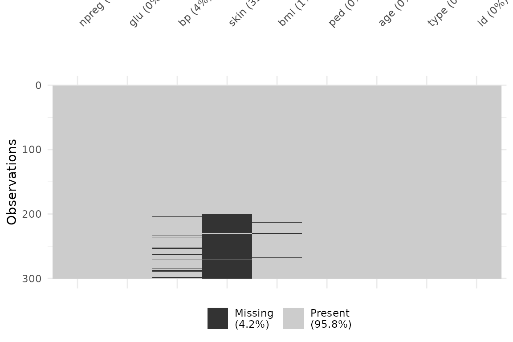
insulin and triceps show substantial
missingness — a realistic scenario in clinical datasets. We impute using
mice:
3. Fit a model
We split the data into training and test sets, then fit a logistic regression model.
set.seed(42)
n <- nrow(pima_imputed)
train_idx <- sample(seq_len(n), size = floor(0.7 * n))
pima_train <- pima_imputed[train_idx, ]
pima_test <- pima_imputed[-train_idx, ]
pima_model <- tr_fit(pima_train, outcome = "type", engine = "logistic_reg")
#> Model fitted successfully using engine: logistic_regtriageR also supports "random_forest" and
"boost_tree" engines via the same interface — useful for
comparing approaches without rewriting your pipeline:
4. Validate the model
Validation on a genuine holdout set produces discrimination metrics, a confusion matrix, and an ROC curve. We validate all three engines on the same holdout set to compare performance.
pima_validation <- tr_validate(pima_model, newdata = pima_test)
#> Validation metrics (newdata):
#> # A tibble: 5 × 3
#> .metric .estimator .estimate
#> <chr> <chr> <dbl>
#> 1 roc_auc binary 0.873
#> 2 sens binary 0.742
#> 3 spec binary 0.797
#> 4 accuracy binary 0.778
#> 5 brier_score binary 0.142
#>
#> Confusion Matrix:
#> Truth
#> Prediction No Yes
#> No 47 8
#> Yes 12 23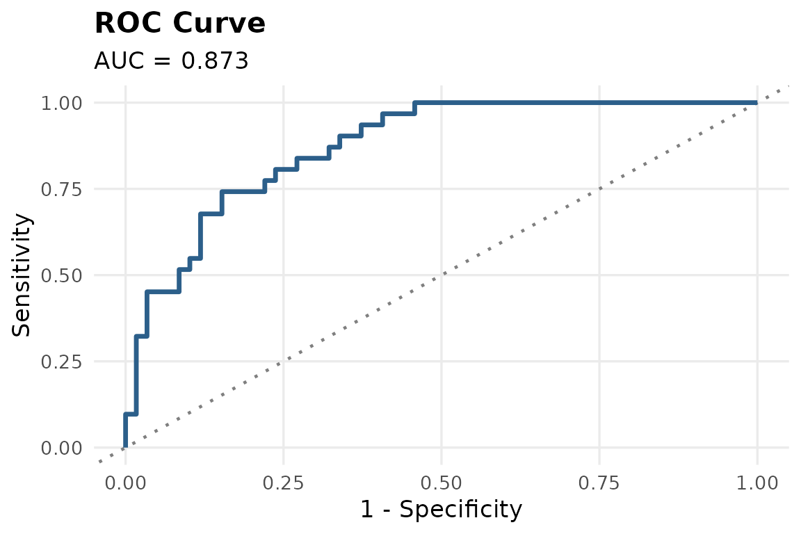
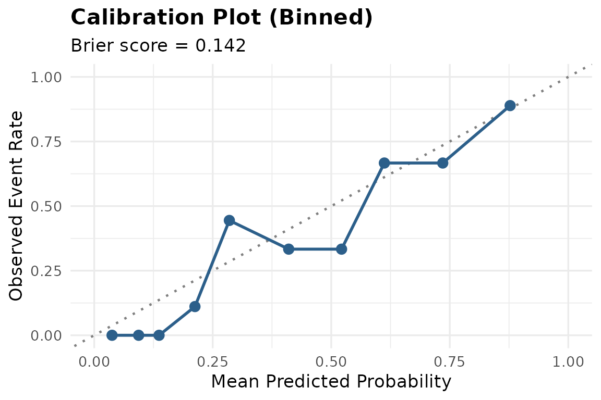
pima_validation_rf <- tr_validate(pima_model_rf, newdata = pima_test)
#> Validation metrics (newdata):
#> # A tibble: 5 × 3
#> .metric .estimator .estimate
#> <chr> <chr> <dbl>
#> 1 roc_auc binary 0.858
#> 2 sens binary 0.774
#> 3 spec binary 0.831
#> 4 accuracy binary 0.811
#> 5 brier_score binary 0.151
#>
#> Confusion Matrix:
#> Truth
#> Prediction No Yes
#> No 49 7
#> Yes 10 24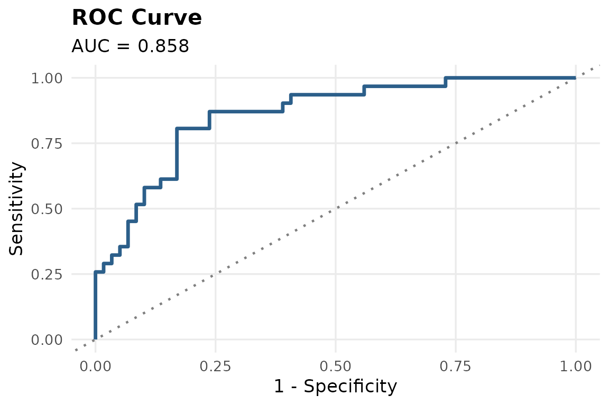
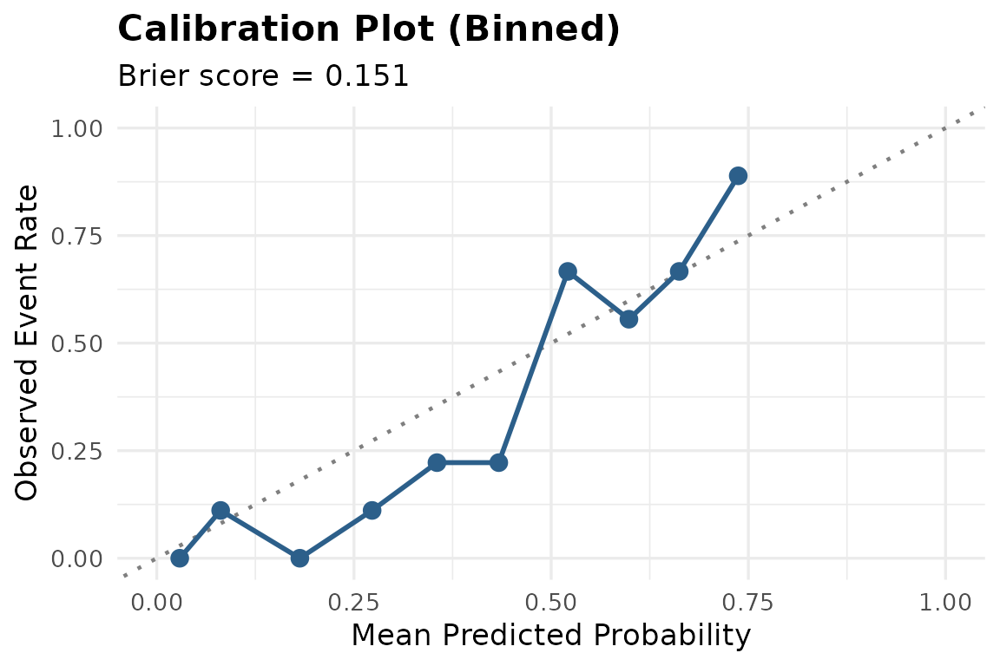
pima_validation_xgb <- tr_validate(pima_model_xgb, newdata = pima_test)
#> Validation metrics (newdata):
#> # A tibble: 5 × 3
#> .metric .estimator .estimate
#> <chr> <chr> <dbl>
#> 1 roc_auc binary 0.838
#> 2 sens binary 0.742
#> 3 spec binary 0.797
#> 4 accuracy binary 0.778
#> 5 brier_score binary 0.155
#>
#> Confusion Matrix:
#> Truth
#> Prediction No Yes
#> No 47 8
#> Yes 12 23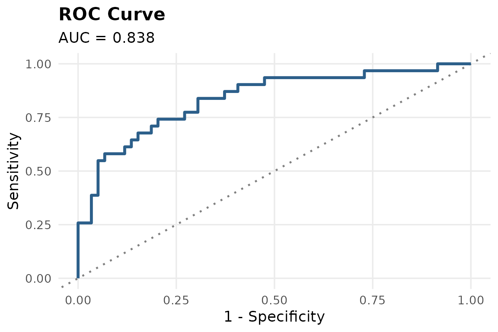
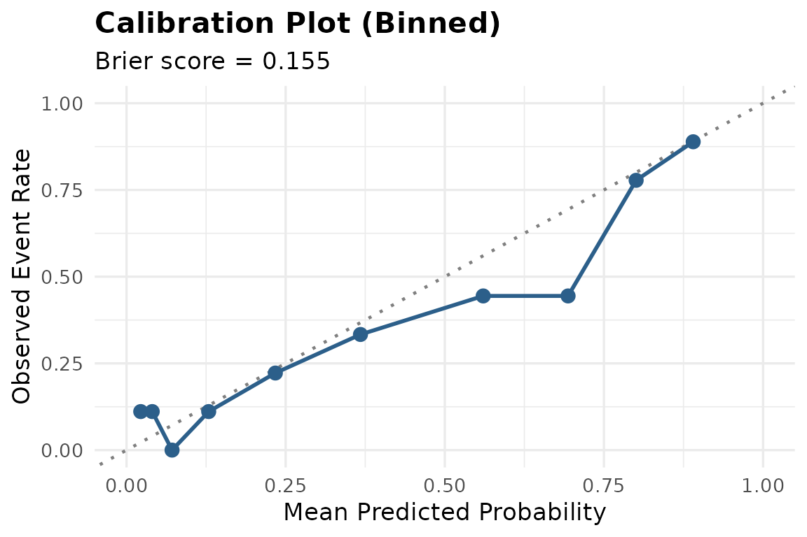
pima_validation$roc_plot
Comparing engines
engine_comparison <- dplyr::bind_rows(
dplyr::mutate(pima_validation$metrics, engine = "logistic_reg"),
dplyr::mutate(pima_validation_rf$metrics, engine = "random_forest"),
dplyr::mutate(pima_validation_xgb$metrics, engine = "boost_tree")
)
tidyr::pivot_wider(engine_comparison, names_from = .metric, values_from = .estimate)
#> # A tibble: 3 × 7
#> .estimator engine roc_auc sens spec accuracy brier_score
#> <chr> <chr> <dbl> <dbl> <dbl> <dbl> <dbl>
#> 1 binary logistic_reg 0.873 0.742 0.797 0.778 0.142
#> 2 binary random_forest 0.858 0.774 0.831 0.811 0.151
#> 3 binary boost_tree 0.838 0.742 0.797 0.778 0.155
pima_validation_rf$roc_plot
pima_validation_xgb$roc_plot
For the remainder of this vignette, we continue with the logistic regression model for explainability and reporting, as it offers the most directly interpretable coefficients for clinical use.
5. Explain the model
tr_explain(pima_model, method = "permutation")
#> Warning: Using `size` aesthetic for lines was deprecated in ggplot2 3.4.0.
#> ℹ Please use `linewidth` instead.
#> ℹ The deprecated feature was likely used in the ingredients package.
#> Please report the issue at
#> <https://github.com/ModelOriented/ingredients/issues>.
#> This warning is displayed once per session.
#> Call `lifecycle::last_lifecycle_warnings()` to see where this warning was
#> generated.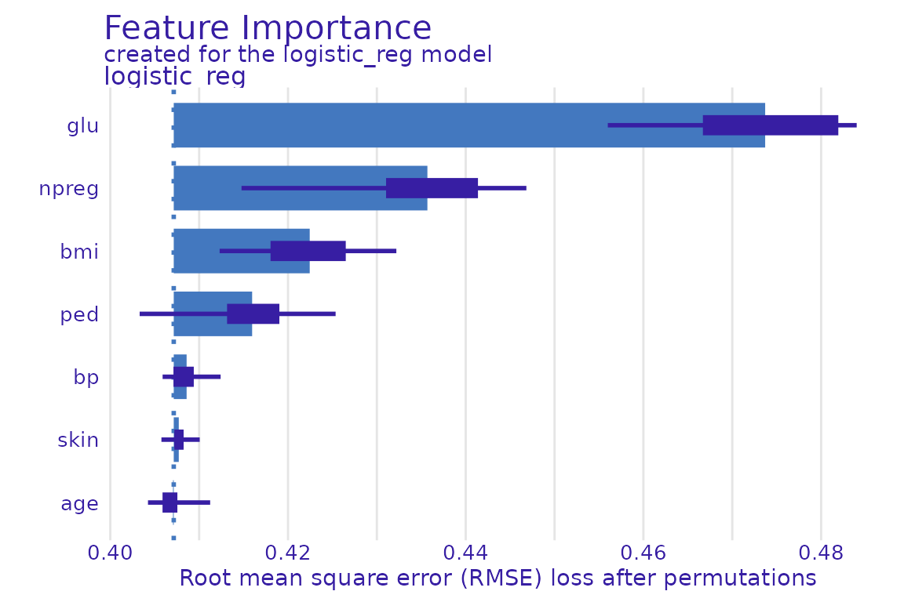
Glucose consistently emerges as the strongest predictor of diabetes in this dataset, consistent with established clinical literature.
6. Automated pipeline review
tr_agent_review() checks for common clinical modelling
pitfalls: class imbalance, low events-per-variable ratio, possible data
leakage, and small sample size.
pima_review <- tr_agent_review(pima_train, pima_model, use_agent = FALSE)
#>
#> --- triageR Pipeline Review ---
#>
#> No major issues flagged.7. Sensitivity analysis
pima_sensitivity <- tr_sensitivity(pima_train, pima_model)
#> Model fitted successfully using engine: logistic_reg
#> Validation metrics (training_data):
#> # A tibble: 5 × 3
#> .metric .estimator .estimate
#> <chr> <chr> <dbl>
#> 1 roc_auc binary 0.812
#> 2 sens binary 0.547
#> 3 spec binary 0.867
#> 4 accuracy binary 0.752
#> 5 brier_score binary 0.166
#>
#> Confusion Matrix:
#> Truth
#> Prediction No Yes
#> No 117 34
#> Yes 18 41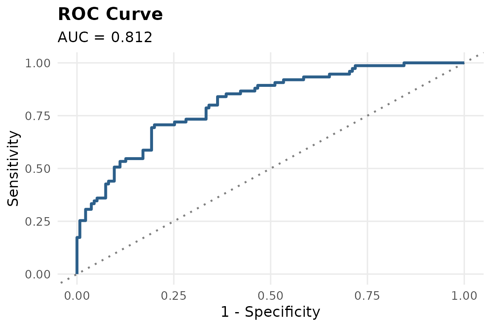
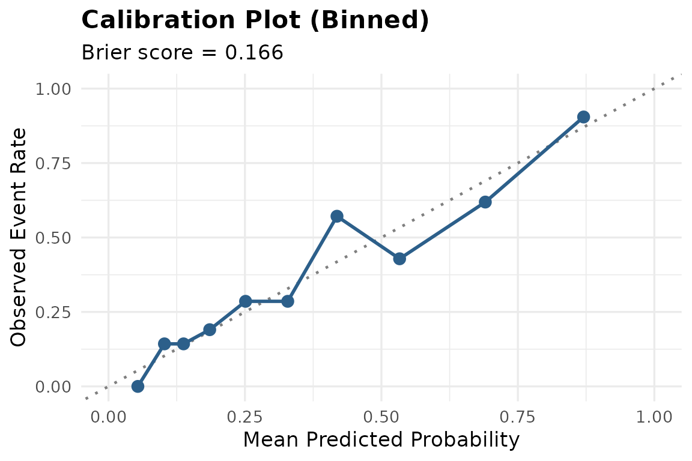
#> Model fitted successfully using engine: logistic_reg
#> Validation metrics (training_data):
#> # A tibble: 5 × 3
#> .metric .estimator .estimate
#> <chr> <chr> <dbl>
#> 1 roc_auc binary 0.809
#> 2 sens binary 0.485
#> 3 spec binary 0.863
#> 4 accuracy binary 0.734
#> 5 brier_score binary 0.165
#>
#> Confusion Matrix:
#> Truth
#> Prediction No Yes
#> No 113 35
#> Yes 18 33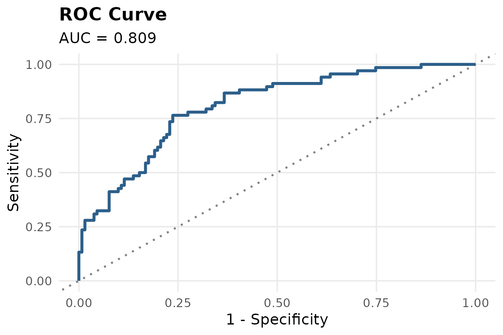
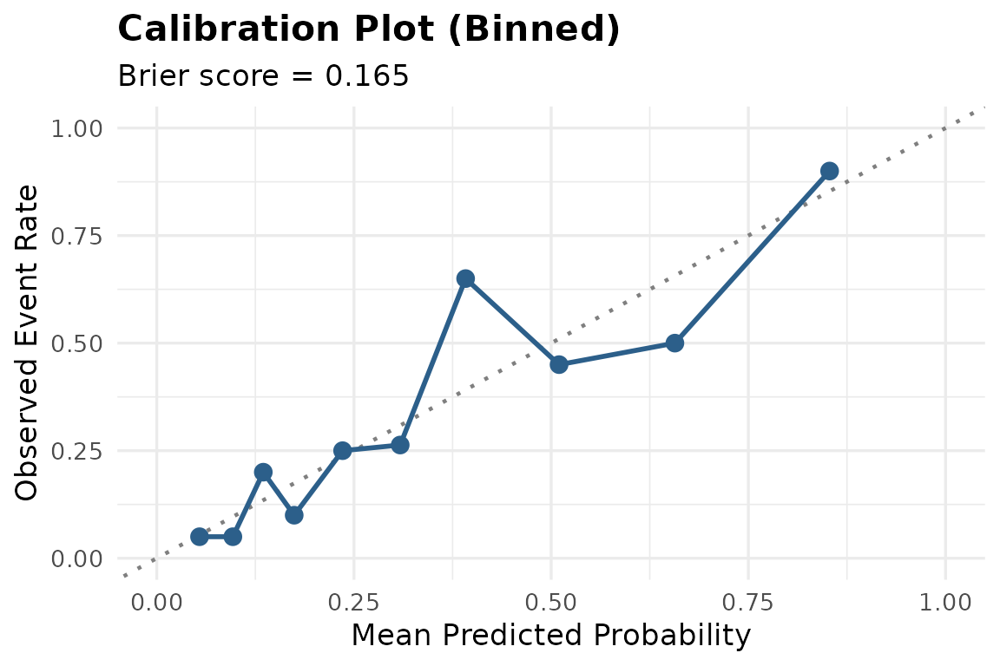
#>
#> --- Sensitivity Analysis Comparison ---
#> # A tibble: 2 × 7
#> scenario .estimator roc_auc sens spec accuracy brier_score
#> <chr> <chr> <dbl> <dbl> <dbl> <dbl> <dbl>
#> 1 complete_case binary 0.812 0.547 0.867 0.752 0.166
#> 2 outliers_excluded binary 0.809 0.485 0.863 0.734 0.165
#>
#> Note: Compare AUC/sensitivity/specificity across scenarios. Large swings suggest the model is not robust to that assumption.8. Generate a TRIPOD+AI-aligned report
Finally, all of the above can be compiled into a single reproducible report, aligned with TRIPOD+AI reporting guidance.
tr_tripod_report(
model = pima_model,
validation = pima_validation,
review = pima_review,
sensitivity = pima_sensitivity,
output_file = file.path(tempdir(), "pima_diabetes_report"),
format = "html"
)Optional: AI-assisted method recommendation
If a Gemini API key is configured (see
?tr_recommend_method), triageR can also suggest an
appropriate statistical or ML approach based on the structure of your
data:
tr_recommend_method(
pima_train,
outcome = "type",
context = "predicting diabetes onset in adult women"
)